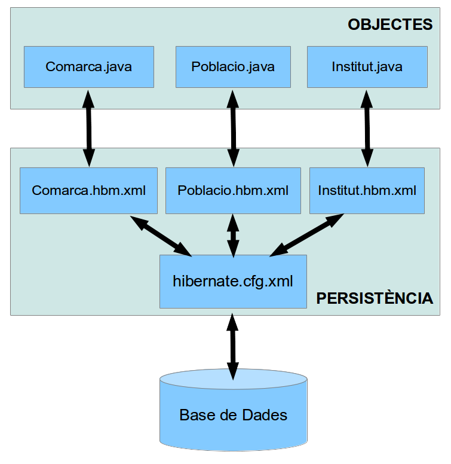

7 - Estructura dels fitxers de mapatge
En la pregunta 5.1 havíem vist les classes generades per Hibernate, i també havíem vist una imatge amb el diagrama de mapatge en la pregunta 5.2. Anem a veure-ho ara amb més detall, mirant totes les classes i fitxers generades en el procés de mapatge i com s'interrelacionen entre elles.
Els fitxers que serveixen de mapatge, Hibernate els genera de tipus XML, i sran:
- hibernate.cfg.xml, ja comentat anteriorment i que estableix les condicions bàsiques de la connexió amb la Base de Dades (Driver, URL, usuari, contrasenya, ...).
- Un fitxer .hbm.xml per cada taula (i classe). Així en el nostre exemple tindrem Comarques.hbm.xml, Poblacions.hbm.xml i Instituts.hbm.xml i són els encarregats de dir la correspondència entre els camps de la taula (p.e. COMARQUES) i les propietats de l'objecte (p.e. Comarques.java).
La següent imatge explica aquesta manera d'enllaçar:

El fitxer hibernate.cfg.xml
El fitxer hibernate.cfg.xml estableix les condicions de la connexió:
<!DOCTYPE hibernate-configuration PUBLIC "-//Hibernate/Hibernate Configuration DTD 3.0//EN" "http://www.hibernate.org/dtd/hibernate-configuration-3.0.dtd">
<hibernate-configuration>
<session-factory>
<property name="hibernate.bytecode.use_reflection_optimizer">false</property>
<property name="hibernate.connection.driver_class">org.postgresql.Driver</property>
<property name="hibernate.connection.password">geo_ad</property>
<property name="hibernate.connection.url">jdbc:postgresql://89.36.214.106:5432/geo_ad</property>
<property name="hibernate.connection.username">geo_ad</property>
<property name="hibernate.default_schema">public</property>
<property name="hibernate.dialect">org.hibernate.dialect.PostgreSQLDialect</property>
<property name="hibernate.search.autoregister_listeners">true</property>
<property name="hibernate.validator.apply_to_ddl">false</property>
<mapping resource="classes/Poblacio.hbm.xml"/>
<mapping resource="classes/Comarca.hbm.xml"/>
<mapping resource="classes/Institut.hbm.xml"/>
</session-factory>
</hibernate-configuration>
Podem observar com s'especifica el driver JDBC, la URL, l'usuari que es connecta, la contrasenya, l'esquema (que dependrà del SGBD; en altres farà falta el catàleg).
Els fitxers .hbm.xml
Els fitxers .hbm.xml estableixen la correspondència entre taula i classe, i dins d'elles entre camps de la taula i propietats de la classe. Mirem el contingut de Comarques.hbm.xml. Posem a un costat l'estructura de la taula, i a l'altre l'estructura de l'objecte:
| Taula COMARCA | Comarca.hbm.xml | Comarca.java |
|
TABLE COMARCA ( |
<?xml version="1.0" encoding="UTF-8" standalone="no"?> <hibernate-mapping auto-import="true" default-access="property" default-cascade="none" default-lazy="true"> <class dynamic-insert="false" dynamic-update="false" mutable="true" name="classes.Comarca" optimistic-lock="version" polymorphism="implicit" select-before-update="false" table="comarca"> <id name="nomC" type="string"> <column length="50" name="nom_c"/> <generator class="assigned"/> </id> <property generated="never" lazy="false" name="provincia" optimistic-lock="true" type="string" unique="false"> <column length="25" name="provincia"/> </property> <set embed-xml="true" fetch="select" inverse="true" lazy="true" mutable="true" name="poblacios" optimistic-lock="true" sort="unsorted" table="poblacio"> <key on-delete="noaction"> <column length="50" name="nom_c"/> </key> <one-to-many class="classes.Poblacio" embed-xml="true" not-found="exception"/> </set> </class> </hibernate-mapping> |
package classes; import java.util.HashSet; import java.util.Set; public class Comarca implements java.io.Serializable { private static final long serialVersionUID = 1L; private String nomC; private String provincia; private Set<Poblacio> poblacios = new HashSet<Poblacio>(0); public Comarques() { } ... } |
Comentem un poc les coses:
- <hibernate-mapping> és l'element arrel; tot el mapatge està contingut dins d'ell.
- <class> Equival a tota la classe per una banda i tota la taula per una altra. Dins d'aquest element estaran totes les correspondències de camps i propietats.
- L'atribut name conté el nom de la classe.
- L'atribut table conté el nom de la taula corresponent.
- Pot haver algun altre atribut, indicant el catàleg (depén del SGBD)
- <id> especifica el camp que és clau principal. És diferent als camps normals.
- L'atribut name indica el nom de la propietat
- L'atribut type el tipus de dades.
- L'element column és un element buit amb la propietat name, que contindrà el camp de la taula
- L'element generator és un element buit amb un atribut class indicant la manera de generar aquesta clau principal. Els valors possibles són:
- assigned que indica que l'usuari ha d'assignar un valor a aquesta propietat
- increment que indica que la Base de Dades proporciona el valor autogenerat
- <property> especifica un camp normal, que no és clau principal. Només s'ha d'especificar:
- L'atribut name indica el nom de la propietat
- L'atribut type el tipus de dades.
- L'element column és un element buit amb la propietat name, que contindrà el camp de la taula
Els tipus de dades no són ni de la Base de Dades ni tampoc Java. Són tipus anomenats tipus de mapatge Hibernate, i s'encarrega Hibernate de fer la correspondència entre tipus Java i de la Base de Dades de forma automàtica.
I ens deixem per al final la manera d'enllaçar la clau exerna. Recordem que la clau externa està definida en POBLACIO i que apunta a COMARCA. En el mapatge de Comarca tindrem una línia nova que és la que indica que la propietat poblacios ha de contenir les poblacions de la comarca. És per tant un conjunt (set) de moltes poblacions. Les coses més importants són les següents:
- <set> que indica que serà un conjunt
- L'atribut name serà el nom de la propietat
- L'atribut table el nom de la taula on ha de buscar les dades, és a dir la que té la clau externa (en aquest cas POBLACIO)
- L'atribut order-by ens permet que les dades vinguen ordenades
- L'element key especifica la clau externa, amb l'element column i atribut name, en aquest cas nom_c.
- L'element one-to-many indica que un departament pot tenir molts empleats (per això era un conjunt), i especifica de quina classe són amb l'atribut class
Fem especial menció a l'atribut order-by, que ens permet que les dades vinguen ordenades. Ho aplicarem en la pregunta 8.3.
En el cas de les poblacions, taula POBLACIO i classe Poblacio, les coses seran molt similars. La diferència més significativa és la manera de representar la clau externa. Ara serà una relació many-to-one, indicant que la població pot estar en una única comarca, és a dir farà referència a un unic objecte Comarca.
|
<many-to-one class="classes.Comarca" embed-xml="true" fetch="select" insert="true" name="comarca" not-found="exception" optimistic-lock="true" unique="false" update="true">
<column length="50" name="nom_c"/> </many-to-one> |
- <many-to-one> en la propietat que fa referència a l'altra classe
- L'atribut name indica el nom de la propietat.
- L'atribut class indica la classe a què fa referència, en aquest cas Comarca.
- L'element column és un element buit amb la propietat name, que contindrà el camp de la taula
En resum, dins de l'element class que equival a la classe (i la taula), tindrem els elements:
- id per a la clau principal
- property per als camps normals
- many-to-one per als que són clau externa
- set per als que són apuntats per una clau externa, indicant el conjunt.
Llicenciat sota la Llicència Creative Commons Reconeixement NoComercial CompartirIgual 2.5